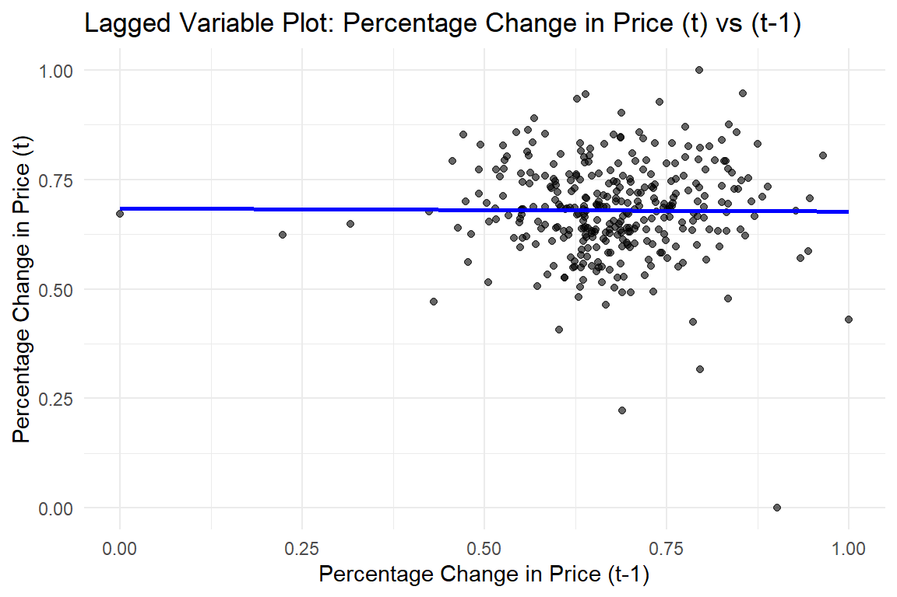
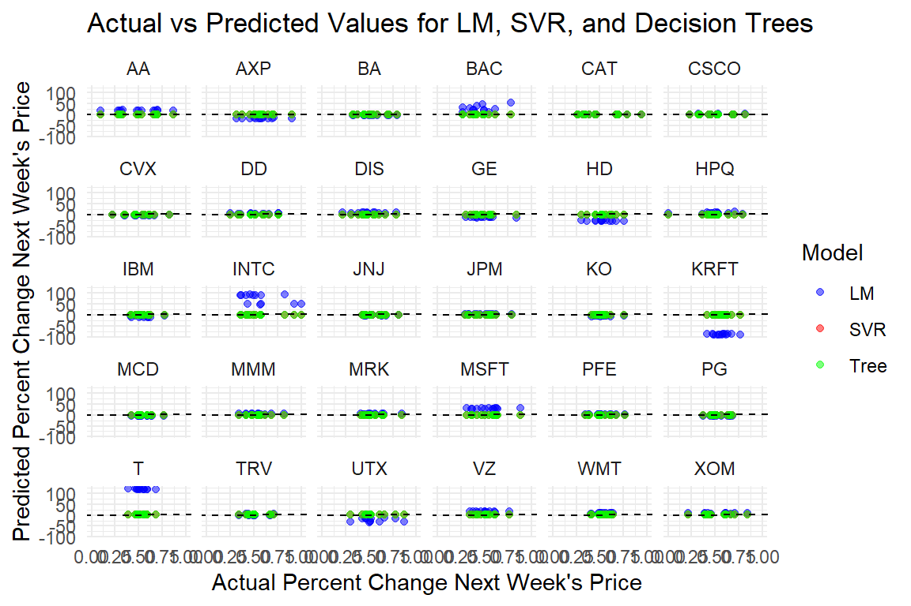
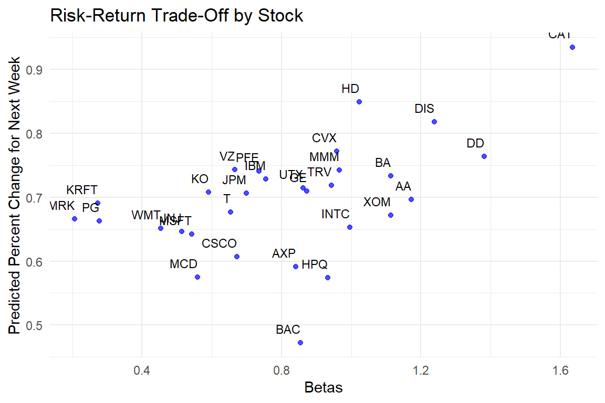
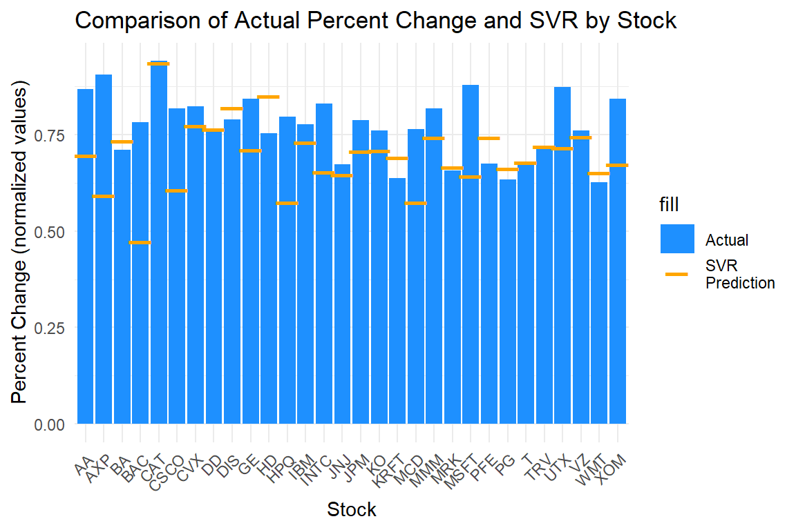

DA 6813 Case Study 3 Dow Jones
1 Executive Summary
This case study focuses on predicting weekly stock price changes for the Dow Jones Index to optimize investment strategies. Using historical stock performance data, including prices, trading volumes, and financial indicators, the analysis aimed to forecast the percent_change_next_weeks_price for each stock. Three models—Linear Regression (LM), Decision Trees (DT), and Support Vector Regression (SVR)—were developed and evaluated using Root Mean Square Error (RMSE) as the primary metric. Data preprocessing steps included handling missing values with KNN imputation and normalizing numeric features to ensure comparability, especially for SVR. The findings showed that SVR consistently outperformed LM and DT, delivering the lowest RMSE across various stocks. This highlights its superior capability in capturing complex, non-linear relationships within the data. The insights gained from this analysis provide actionable recommendations for selecting stocks with high growth potential and managing investment risks. Future enhancements, such as incorporating ensemble methods and additional financial indicators, could further improve predictive accuracy and decision-making.
2 Problem Statement
The Dow Jones Index case study addresses a critical business challenge: predicting weekly stock performance to optimize investment strategies. In a highly volatile market, businesses and investors rely on accurate forecasts to maximize returns and mitigate risks. This study aims to develop predictive models that forecast the percentage change in stock prices for the following week, helping identify stocks with the highest growth potential. Using historical data, including stock prices, trading volumes, and financial indicators, the analysis seeks to improve decision-making by leveraging models such as Linear Regression, Decision Trees, and Support Vector Regression. These models will be evaluated for their accuracy and ability to assess risk using methods like the Capital Asset Pricing Model (CAPM). Addressing this problem will enable businesses to allocate resources more effectively, capitalize on profitable opportunities, and enhance their competitive edge in the financial market. Notably, the study will also examine broader market risks, such as the unusual losses experienced by all Dow Jones stocks in the week ending May 27, 2011, providing a comprehensive view of potential challenges.
3 Additional Sources
Support Vector Machines (SVMs) have been extensively applied in financial markets for stock price prediction due to their ability to handle complex, non-linear relationships. For instance, a study by Kim (2003) demonstrated that SVMs could outperform traditional models in forecasting stock price indices, highlighting their robustness in capturing market dynamics.
The Capital Asset Pricing Model (CAPM) is a fundamental tool in finance for assessing the risk and expected return of an investment. It establishes a linear relationship between the expected return of an asset and its systematic risk, measured by beta. This model aids investors in determining whether a stock is fairly priced relative to its risk. For a comprehensive understanding of CAPM, Investopedia provides an in-depth explanation of its components and applications.
Integrating SVMs for stock price prediction with CAPM for risk assessment can offer a holistic approach to investment decision-making, combining advanced predictive analytics with established financial theories.
Kim, K. (2003).
A study on the application of Support Vector Machines (SVM) for stock price index prediction.
https://www.researchgate.net/publication/220379019Wall Street Prep - Capital Asset Pricing Model (CAPM).
Comprehensive guide on using CAPM for risk assessment in financial markets.
https://www.wallstreetprep.com/knowledge/capm-capital-asset-pricing-modelInvestopedia - Capital Asset Pricing Model (CAPM).
In-depth explanation of CAPM, its components, and applications.
https://www.investopedia.com/terms/c/capm.asp
4 Methodology
To predict weekly stock price changes (percent_change_next_weeks_price), we employed three models: Linear Regression (LM), Decision Trees (DT), and Support Vector Regression (SVR). Before modeling, we performed comprehensive data preprocessing. Missing values in key variables were addressed using KNN imputation to preserve data integrity. Numeric features were scaled and normalized to ensure comparability, particularly important for SVR, which relies on distance measures in feature space. Lagged variables were created to capture potential temporal dependencies; however, lagged plots indicated no significant relationship between the lagged variables and the target, so they were excluded from the final models. The data was then split into training (Q1) and testing (Q2) sets, maintaining temporal integrity to simulate real-world forecasting scenarios.
Each model comes with specific assumptions. Linear Regression assumes a linear relationship between predictors and the target, independence of errors, homoscedasticity (constant error variance), and normally distributed errors. It also requires minimal multicollinearity among predictors. Decision Trees, being non-parametric, do not assume a specific relationship between predictors and the target but are sensitive to small data changes. SVR, which emerged as the best-performing model, makes no assumptions about the data’s underlying distribution but relies on normalized inputs to maximize the margin around the true values. Model performance was evaluated using Root Mean Square Error (RMSE), as it effectively measures prediction accuracy without the limitations of Mean Absolute Percentage Error (MAPE), which is problematic when actual values approach zero.
To tailor predictions to individual stocks, we applied these modeling techniques separately to each stock in the dataset. A loop was used to iterate through each stock, training and testing the models on its specific data. This approach ensured that the models accounted for the unique patterns and behaviors of each stock. SVR consistently achieved the lowest RMSE across stocks, making it the most reliable model for predicting weekly stock changes. Future work could explore ensemble methods or incorporate additional financial indicators to improve performance further.
5 Data
The dataset for this analysis consists of weekly stock performance metrics from the Dow Jones Index, including variables such as opening, closing, high, and low prices, trading volumes, and percentage changes in prices. After importing the data, we conducted a thorough inspection to understand its structure and address missing values. Missing data, particularly in numeric variables like percent_change_volume_over_last_wk and previous_weeks_volume, was imputed using KNN imputation to maintain data integrity and preserve patterns. Numeric features were normalized and scaled to ensure comparability, which was especially crucial for models like SVR that depend on distance-based calculations.
To explore potential temporal dependencies, we initially created lagged variables, assuming that previous week changes might have predictive power for the target variable, percent_change_next_weeks_price. However, as shown in the lag plot below, there was no significant correlation between the lagged variable (percent_change_price of the previous week) and the target variable. The scatterplot shows a nearly flat trend line, indicating that the past week’s percentage change provides no meaningful predictive value for the current week’s change. Consequently, we excluded the lagged variables from our final models to avoid introducing unnecessary noise. After preprocessing, the data was split into training (Q1) and testing (Q2) sets, maintaining temporal integrity to simulate realistic forecasting scenarios. This preprocessing ensured a solid foundation for our modeling efforts.
Below, the plot illustrates the lack of correlation between the lagged variable and the target, confirming its irrelevance to our predictive modeling:
6 Findings
Our analysis assessed the performance of Linear Regression (LM), Decision Trees (DT), and Support Vector Regression (SVR) for predicting weekly stock price changes, with Root Mean Square Error (RMSE) as the evaluation metric. Preprocessing steps, including KNN imputation and normalization, ensured the models were optimized for performance. Among the models, SVR consistently delivered the lowest RMSE, averaging 0.211, compared to 18.3 for LM and 0.250 for DT, as shown in the bar chart below. This highlights SVR’s superior ability to capture complex, non-linear relationships, making it the most reliable model for stock forecasting.
For individual stocks such as AA, AXP, and BA, SVR demonstrated robust performance, with RMSE values of 0.234, 0.167, and 0.250, respectively. In contrast, LM’s RMSE for these stocks was significantly higher at 18.8, 16.8, and 3.21, while DT showed moderate accuracy with RMSE values of 0.335, 0.234, and 0.274. The bar chart below compares RMSE values across all three models, clearly illustrating SVR’s consistent accuracy.
The second visual, a line graph, provides an analysis of stock performance relative to the S&P 500. This graph plots the Beta coefficient (x-axis), which measures each stock’s volatility compared to the market, against performance (y-axis). Stocks on the left represent lower risk (Beta < 1), while those on the right show higher risk (Beta > 1). This risk-performance relationship helps contextualize each stock’s predictive accuracy and market behavior. SVR’s ability to accurately forecast stock prices across both low- and high-risk stocks demonstrates its adaptability, even under varying market conditions.
6.0.1 Visuals:
Bar Chart: RMSE Comparison Across Models
Highlights the predictive accuracy of LM, DT, and SVR for individual stocks.Line Graph: Stock Performance Relative to S&P 500
Shows the relationship between risk (Beta coefficient) and stock performance, providing insights into market dynamics and risk management.Bar Graph: Comparison of Actual vs SVR Prediction by Stock
These findings affirm SVR as the most effective model for predicting weekly stock price changes, offering both accuracy and adaptability. Future efforts could explore ensemble methods or integrate additional risk indicators for enhanced forecasting.



7 Conclusion
In conclusion, the study demonstrated that Support Vector Regression (SVR) is the most effective model for predicting weekly stock price changes, consistently outperforming Linear Regression and Decision Trees in terms of RMSE. This result underscores the importance of selecting models capable of capturing complex, non-linear relationships in financial data. The preprocessing steps, including normalization and KNN imputation, ensured the models operated on high-quality data, contributing to the reliability of the findings. While the SVR model showed strong predictive performance, future improvements could involve exploring ensemble techniques and integrating additional indicators such as market sentiment or macroeconomic variables. These enhancements could further refine the models’ predictive capabilities and provide deeper insights into stock market behavior, aiding investors in making informed, data-driven decisions.